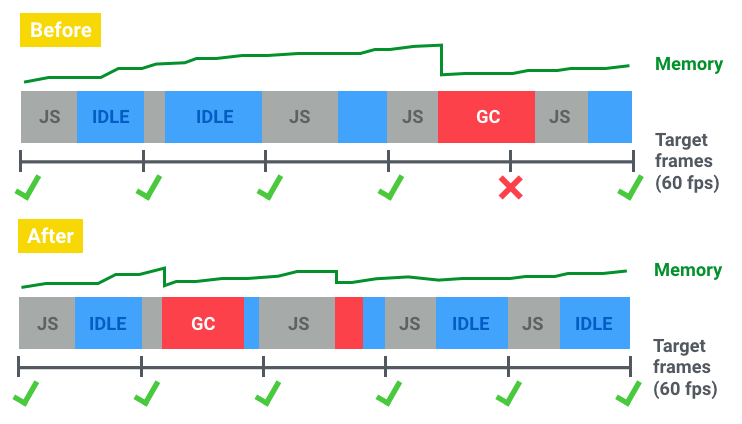

JS
memory management
and hunting memory leaks
@naugtur, Node.js Global Summit 2020The app that tought me about memory leaks
#coolstory
Garbage collection
- Copy items that can be reached
- Swap
- Cleanup is done by not saving the rest
Scheduling GC
Smarter garbage collection for smoother browsing and less memory usage, 2015/12/08
V8 garbage collection deep dive
Compacting GC
Compacting Garbage Collection in SpiderMonkeyMore compacting GC
GC phases
marking -> sweeping -> compacting
And there's threads now...
but you're tired already, let's move onShapes
used to be called Hidden classes
Hidden Classes and Inline Caching in V8 (2015)Shapes and Inline Caches (2018)
 image credit https://mathiasbynens.be/notes/shapes-ics
image credit https://mathiasbynens.be/notes/shapes-ics
Latest V8 garbage collector (2019)
Orinoko
https://v8.dev/blog/trash-talkHow it works
var aBoy = { name: "Johny" },
aGirl = { name: "Sue" },
anAnimal = { name: "Garfield" };
aBoy = null;
//Johny can now be garbage-collected
aGirl = { name: "Lucy" };
//Sue can now be garbage-collected
aGirl.ownsAnimal = anAnimal
//we have a new reference to Garfield
anAnimal = null;
//a reference is removed, but it was not the only one
//Garfield can't be garbage-collected
Popular misconceptions
- no,
deletekeyword does not free memory - seriously,
deletejust slows you down (creates new Shape) - no, setting object to
nulldoesn't remove the object, it changes the reference
Pooling
What if I need thousands of objects for short periods of time? I'm implementing a minigun.
- Create a set of empty objects you need
- Make a getter that returns the least recently used one
- Overwrite its fields with new values
- Reuse the same N objects without ever causing garbage collection
This really is only useful for things like particle animation or UI rendering libraries
What's the problem?
Forget!
@naugtur
http://naugtur.pl